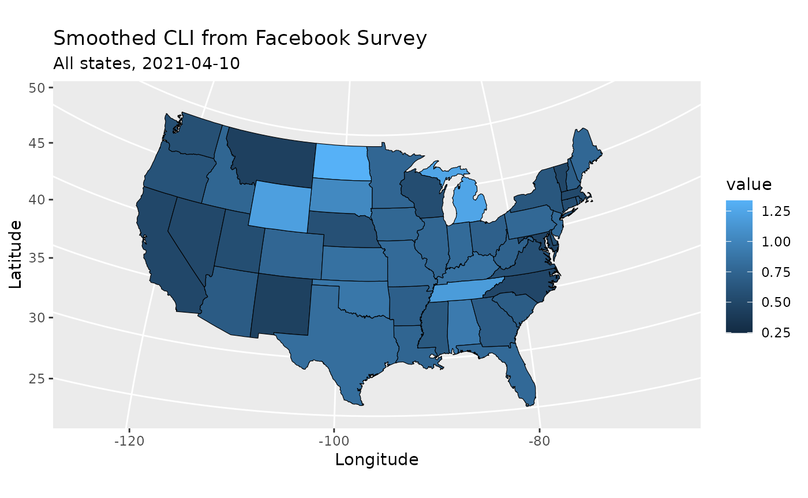

The epidatr package provides access to all the endpoints of the Delphi Epidata API, and can be used to make requests for specific signals on specific dates and in select geographic regions.
Setup
Installation
You can install the stable version of this package from CRAN:
install.packages("epidatr")
pak::pkg_install("epidatr")
renv::install("epidatr")Or if you want the development version, install from GitHub:
# Install the dev version using `pak` or `remotes`
pak::pkg_install("cmu-delphi/epidatr@dev")
remotes::install_github("cmu-delphi/epidatr", ref = "dev")
renv::install("cmu-delphi/epidatr@dev")API Keys
The Delphi API requires a (free) API key for full functionality. While most endpoints are available without one, there are limits on API usage for anonymous users, including a rate limit.
To generate your key, register
for a pseudo-anonymous account. See the save_api_key()
function documentation for details on how to set up epidatr
to use your API key.
Note that private endpoints (i.e. those prefixed with
pvt_) require a separate key that needs to be passed as an
argument. These endpoints require specific data use agreements to
access.
Basic Usage
Fetching data from the Delphi Epidata API is simple. Suppose we are
interested in the covidcast
endpoint, which provides access to a wide
range of data on COVID-19. Reviewing the endpoint documentation, we
see that we need
to specify a data source name, a signal name, a geographic level, a
time resolution, and the location and times of interest.
The pub_covidcast() function lets us access the
covidcast endpoint:
library(epidatr)
library(dplyr)
#>
#> Attaching package: 'dplyr'
#> The following objects are masked from 'package:stats':
#>
#> filter, lag
#> The following objects are masked from 'package:base':
#>
#> intersect, setdiff, setequal, union
# Obtain the most up-to-date version of the smoothed covid-like illness (CLI)
# signal from the COVID-19 Trends and Impact survey for the US
epidata <- pub_covidcast(
source = "fb-survey",
signals = "smoothed_cli",
geo_type = "nation",
time_type = "day",
geo_values = "us",
time_values = epirange(20210105, 20210410)
)
knitr::kable(head(epidata))| geo_value | signal | source | geo_type | time_type | time_value | direction | issue | lag | missing_value | missing_stderr | missing_sample_size | value | stderr | sample_size |
|---|---|---|---|---|---|---|---|---|---|---|---|---|---|---|
| us | smoothed_cli | fb-survey | nation | day | 2021-01-05 | NA | 2021-01-10 | 5 | 0 | 0 | 0 | 1.184132 | 0.0162137 | 360654 |
| us | smoothed_cli | fb-survey | nation | day | 2021-01-06 | NA | 2021-01-29 | 23 | 0 | 0 | 0 | 1.179046 | 0.0162516 | 356720 |
| us | smoothed_cli | fb-survey | nation | day | 2021-01-07 | NA | 2021-01-29 | 22 | 0 | 0 | 0 | 1.197495 | 0.0165100 | 351906 |
| us | smoothed_cli | fb-survey | nation | day | 2021-01-08 | NA | 2021-01-29 | 21 | 0 | 0 | 0 | 1.218064 | 0.0167278 | 348471 |
| us | smoothed_cli | fb-survey | nation | day | 2021-01-09 | NA | 2021-01-29 | 20 | 0 | 0 | 0 | 1.219899 | 0.0168694 | 342855 |
| us | smoothed_cli | fb-survey | nation | day | 2021-01-10 | NA | 2021-01-29 | 19 | 0 | 0 | 0 | 1.231889 | 0.0171074 | 336455 |
pub_covidcast() returns a tibble. (Here
we’re using knitr::kable() to make it more readable.) Each
row represents one observation in Pennsylvania on one day. The state
abbreviation is given in the geo_value column, the date in
the time_value column. Here value is the
requested signal – in this case, the smoothed estimate of the percentage
of people with COVID-like illness, based on the symptom surveys, and
stderr is its standard error.
The Epidata API makes signals available at different geographic
levels, depending on the endpoint. To request signals for all states
instead of the entire US, we use the geo_type argument
paired with * for the geo_values argument.
(Only some endpoints allow for the use of * to access data
at all locations. Check the help for a given endpoint to see if it
supports *.)
# Obtain the most up-to-date version of the smoothed covid-like illness (CLI)
# signal from the COVID-19 Trends and Impact survey for all states
pub_covidcast(
source = "fb-survey",
signals = "smoothed_cli",
geo_type = "state",
time_type = "day",
geo_values = "*",
time_values = epirange(20210105, 20210410)
)We can fetch a subset of states by listing out the desired locations:
# Obtain the most up-to-date version of the smoothed covid-like illness (CLI)
# signal from the COVID-19 Trends and Impact survey for Pennsylvania
pub_covidcast(
source = "fb-survey",
signals = "smoothed_cli",
geo_type = "state",
time_type = "day",
geo_values = c("pa", "ca", "fl"),
time_values = epirange(20210105, 20210410)
)We can also request data for a single location at a time, via the
geo_values argument.
# Obtain the most up-to-date version of the smoothed covid-like illness (CLI)
# signal from the COVID-19 Trends and Impact survey for Pennsylvania
epidata <- pub_covidcast(
source = "fb-survey",
signals = "smoothed_cli",
geo_type = "state",
time_type = "day",
geo_values = "pa",
time_values = epirange(20210105, 20210410)
)
knitr::kable(head(epidata))| geo_value | signal | source | geo_type | time_type | time_value | direction | issue | lag | missing_value | missing_stderr | missing_sample_size | value | stderr | sample_size |
|---|---|---|---|---|---|---|---|---|---|---|---|---|---|---|
| pa | smoothed_cli | fb-survey | state | day | 2021-01-05 | NA | 2021-01-10 | 5 | 0 | 0 | 0 | 1.098724 | 0.0749678 | 15955.01 |
| pa | smoothed_cli | fb-survey | state | day | 2021-01-06 | NA | 2021-01-29 | 23 | 0 | 0 | 0 | 1.076573 | 0.0747346 | 15626.01 |
| pa | smoothed_cli | fb-survey | state | day | 2021-01-07 | NA | 2021-01-29 | 22 | 0 | 0 | 0 | 1.181130 | 0.0793109 | 15345.01 |
| pa | smoothed_cli | fb-survey | state | day | 2021-01-08 | NA | 2021-01-29 | 21 | 0 | 0 | 0 | 1.175252 | 0.0798391 | 15076.01 |
| pa | smoothed_cli | fb-survey | state | day | 2021-01-09 | NA | 2021-01-29 | 20 | 0 | 0 | 0 | 1.177925 | 0.0808110 | 14773.01 |
| pa | smoothed_cli | fb-survey | state | day | 2021-01-10 | NA | 2021-01-29 | 19 | 0 | 0 | 0 | 1.174950 | 0.0816982 | 14474.01 |
Getting versioned data
The Epidata API stores a historical record of all data, including
corrections and updates, which is particularly useful for accurately
backtesting forecasting models. To fetch versioned data, we can use the
as_of argument.
# Obtain the smoothed covid-like illness (CLI) signal from the COVID-19
# Trends and Impact survey for Pennsylvania as it was on 2021-06-01
pub_covidcast(
source = "fb-survey",
signals = "smoothed_cli",
geo_type = "state",
time_type = "day",
geo_values = "pa",
time_values = epirange(20210105, 20210410),
as_of = "2021-06-01"
)See vignette("versioned-data") for details and more ways
to specify versioned data.
Plotting
Because the output data is in a standard tibble format,
we can easily plot it using ggplot2:
library(ggplot2)
ggplot(epidata, aes(x = time_value, y = value)) +
geom_line() +
labs(
title = "Smoothed CLI from Facebook Survey",
subtitle = "PA, 2021",
x = "Date",
y = "CLI"
)
ggplot2 can also be used to create
choropleths.
library(maps)
# Obtain the most up-to-date version of the smoothed covid-like illness (CLI)
# signal from the COVID-19 Trends and Impact survey for all states on a single day
cli_states <- pub_covidcast(
source = "fb-survey",
signals = "smoothed_cli",
geo_type = "state",
time_type = "day",
geo_values = "*",
time_values = 20210410
)
# Get a mapping of states to longitude/latitude coordinates
states_map <- map_data("state")
# Convert state abbreviations into state names
cli_states <- mutate(
cli_states,
state = ifelse(
geo_value == "dc",
"district of columbia",
state.name[match(geo_value, tolower(state.abb))] %>% tolower()
)
)
# Add coordinates for each state
cli_states <- left_join(states_map, cli_states, by = c("region" = "state"))
# Plot
ggplot(cli_states, aes(x = long, y = lat, group = group, fill = value)) +
geom_polygon(colour = "black", linewidth = 0.2) +
coord_map("polyconic") +
labs(
title = "Smoothed CLI from Facebook Survey",
subtitle = "All states, 2021-04-10",
x = "Longitude",
y = "Latitude"
)Finding locations of interest
Most data is only available for the US. Select endpoints report other countries at the national and/or regional levels. Endpoint descriptions explicitly state when they cover non-US locations.
For endpoints that report US data, see the geographic coding documentation for available geographic levels.
Finding data sources and signals of interest
Above we used data from Delphi’s symptom surveys, but the Epidata API includes numerous data streams: medical claims data, cases and deaths, mobility, and many others. This can make it a challenge to find the data stream that you are most interested in.
The Epidata documentation lists all the data sources and signals available through the API for COVID-19 and for other diseases.
You can also use the avail_endpoints() function to get a
table of endpoint functions:
#> ℹ Data is available for the US only, unless otherwise specified| Endpoint | Description |
|---|---|
| pub_covid_hosp_facility() | COVID hospitalizations by facility |
| pub_covid_hosp_facility_lookup() | Helper for finding COVID hospitalization facilities |
| pub_covid_hosp_state_timeseries() | COVID hospitalizations by state |
| pub_covidcast() | Various COVID and flu signals via the COVIDcast endpoint |
| pub_covidcast_meta() | Metadata for the COVIDcast endpoint |
| pub_delphi() | Delphi’s ILINet outpatient doctor visits forecasts |
| pub_dengue_nowcast() | Delphi’s PAHO dengue nowcasts (North and South America) |
| pub_ecdc_ili() | ECDC ILI incidence (Europe) |
| pub_flusurv() | CDC FluSurv flu hospitalizations |
| pub_fluview() | CDC FluView ILINet outpatient doctor visits |
| pub_fluview_clinical() | CDC FluView flu tests from clinical labs |
| pub_fluview_meta() | Metadata for the FluView endpoint |
| pub_gft() | Google Flu Trends flu search volume |
| pub_kcdc_ili() | KCDC ILI incidence (Korea) |
| pub_meta() | Metadata for the Delphi Epidata API |
| pub_nidss_dengue() | NIDSS dengue cases (Taiwan) |
| pub_nidss_flu() | NIDSS flu doctor visits (Taiwan) |
| pub_nowcast() | Delphi’s ILI Nearby nowcasts |
| pub_paho_dengue() | PAHO dengue data (North and South America) |
| pub_wiki() | Wikipedia webpage counts by article |
| pvt_cdc() | CDC total and by topic webpage visits |
| pvt_dengue_sensors() | PAHO dengue digital surveillance sensors (North and South America) |
| pvt_ght() | Google Health Trends health topics search volume |
| pvt_meta_norostat() | Metadata for the NoroSTAT endpoint |
| pvt_norostat() | CDC NoroSTAT norovirus outbreaks |
| pvt_quidel() | Quidel COVID-19 and influenza testing data |
| pvt_sensors() | Influenza and dengue digital surveillance sensors |
| pvt_twitter() | HealthTweets total and influenza-related tweets |
See vignette("signal-discovery") for more
information.